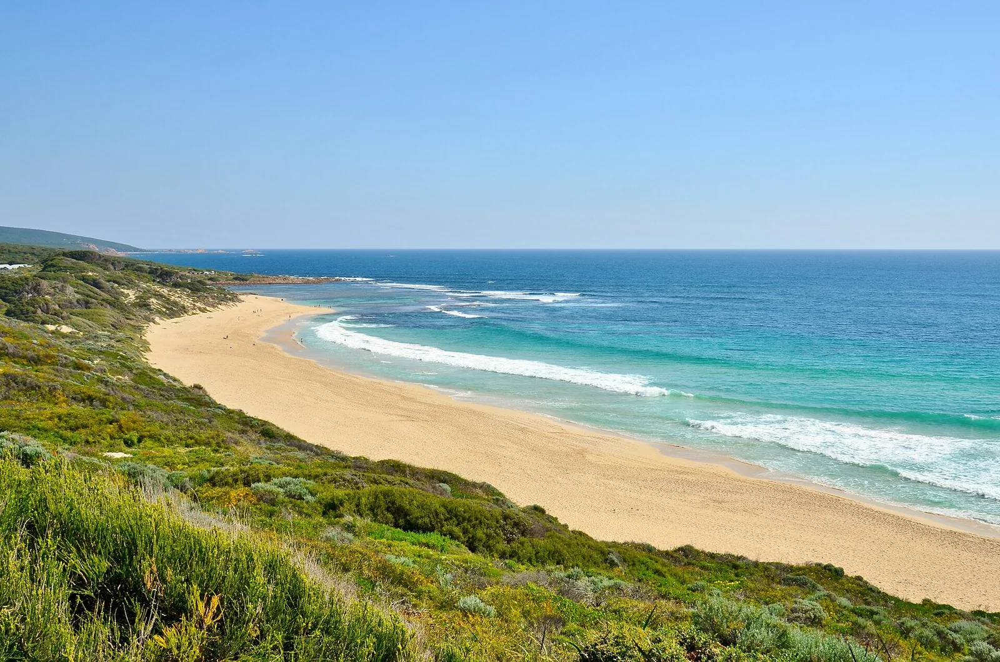

Yallingup
Margaret River, Australie · surf

Spot historique de la région de Margaret River, avec des reefs pour tous les niveaux et des bassins naturels.
- Lieu
- Margaret River, Australie
- Niveau
- Intermédiaire
- Activités
- surf
- Type d'eau
- Mer / océan
- Coordonnées
- -33.64, 115.02 (position approximative du secteur)
Dangers à connaître
- Présence de requins.
- Récif.
Le conseil d'Ocean Buddy
Choisis ton pic selon ton niveau : le reef principal est exigeant.
Ouvrir dans Ocean Buddy Télécharger sur l'App Store
Source : Fiche Ocean Buddy · septembre 2026 · à vérifier localement.